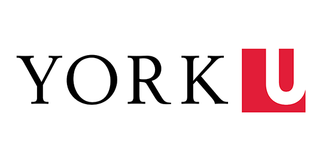

Skills
- Java
- Python
- JavaScript
- HTML
- CSS
- SQL
- React
- Node.js
- PHP
- Project Libre
- Bazigi Modeler
- Mathlab
- Git
- GitHub
- Figma
I started my journey as an international student at York University in 2019. York University has provided me with a platform to explore my interests in the field of Information Technology. I have been actively involved in various projects and have gained hands-on experience in different programming languages and technologies. My passion for learning and problem-solving has driven me to continuously improve my skills and stay updated with the latest trends in the tech industry. I am excited to apply my knowledge and contribute to innovative projects that make a positive impact on society.
